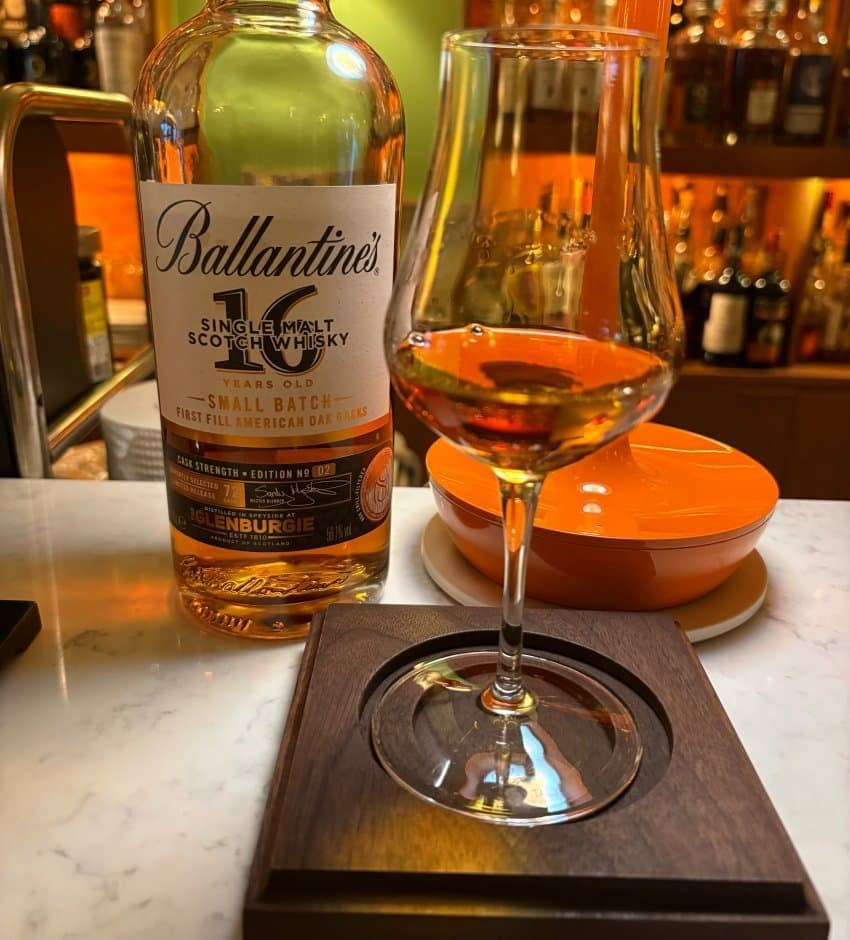

N 캬라멜, 빵, 오크, 레몬, 아몬드, 초콜릿
- 약간 버번이 연상되는 달콤한 캬라멜
- 구수한 빵쪽의 몰티함이 있음
- 기분좋은 오크의 스파이스
- 시간이 지나니 다크초콜릿 향이 올라옴
달큰하고 고소한 버번캐 향
P 오크 스파이스, 캬라멜, 흑설탕
- 쌉쌀한 오크의 스파이스
- 입에서 질감은 적당히 물같은 편
- 캬라멜과 흑설탕 위주의 달콤한 맛
비터스윗 버번캐 맛
F 후추, 오크 스파이스
- 후추와 오크의 쌉쌀한 스파이스가 남음
쌉쌀한 오크
————————————————————
총평
형보다 나은 아우. 지난번 배치1의 경우 맛 자체는 강렬하고 좋았지만 너무 버번스러운 스타일에 아쉬웠다만 이번 배치는 꽤나 밸런스가 좋다.
향에서 특히 빵과 오크 그리고 캬라멜의 달콤함이 느껴지는데 시간이 지나면서 느겨지는 다크초콜릿이 향을 지루하지 않게 해준다.
맛은 약간 나무맛이 나지만 단맛 또한 강하게 쳐주기에 피터스윗으로 받아들일만 하다.
여운은 특출나지는 않고 준수한 정도.
전체적으로 맛있는 독병 버기를 먹었을 때의 특징들이 연하게 떠오르는 맛이다. 잔술로 즐겨볼만한 맛.
————————————————————
재미로 붙여보는 점수는 3.7/5.0 (장점: 비터스윗한 글렌버기)
기준은
1.0 ~ 2.0: 큰 단점 있음
2.0 ~ 2.5: 약한 단점 있음
2.5 ~ 3.5: 큰 단점 없거나 약한 장점 있음
3.5 ~ 4.0: 장점 있음
4.0 ~ 4.5: 강한 장점 있음
4.5 ~ 5.0: 강한 장점이 있고 감동이 있음
————————————————————
image is not found
댓글 10개